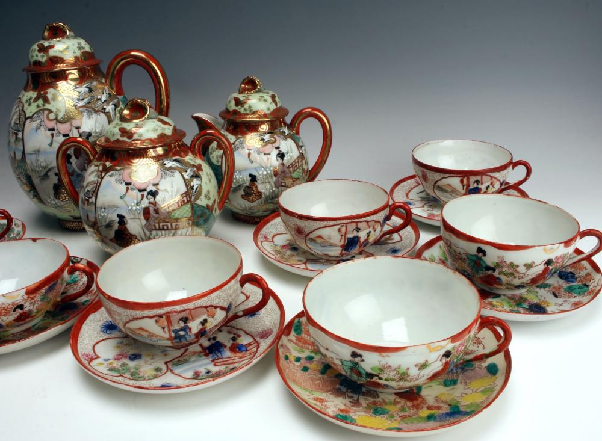

Most pieces marked with the name of a country were made after 1891, when the McKinley Tariff Act was passed. Pieces from Japan were marked “Nippon,” the transliteration of the Japanese word for Japan. After 1915 the words “Made in…” were usually added. Beginning in 1921, U.S. Customs required country names to be in English, and the word “Japan” was used instead of “Nippon.” Items marked “Made in Occupied Japan” were made between February 1947 and April 1952. After that, just the word “Japan” was used again. According to experts on 19th- and 20th-century Japanese ceramics, the color does not help date a mark. Red, green and black were used most years.
Today, for those collecting antique and vintage Japanese art goods of the early 20th century, those marked Nippon or Made in Nippon are oldest and most valued. A fad for collecting Made in Occupied Japan items occurred in the 1980s, making them scarce today. Now some Made in Japan items are old enough to be quite interesting to collectors. And as viewers of PBS’s Antiques Roadshow know, the Japanese are buying back some of the very best of their artistic work that ended up in the United States.

Those collectors familiar with the marks of specific companies on the bottoms of pottery pieces can further identify Japanese sourFor example, one major pottery company imprints a flower in the center of its chops (logo); another uses a bird, another a fish and so on. Luster glazes characterized the somewhat larger and better pottery such as vases and serving plates of the post-war period.